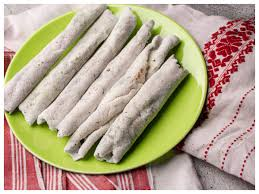
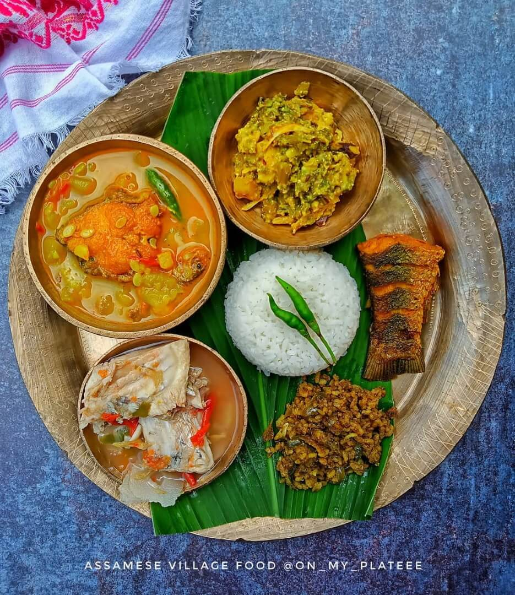
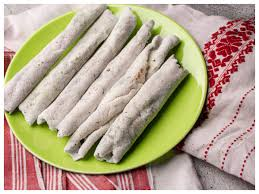
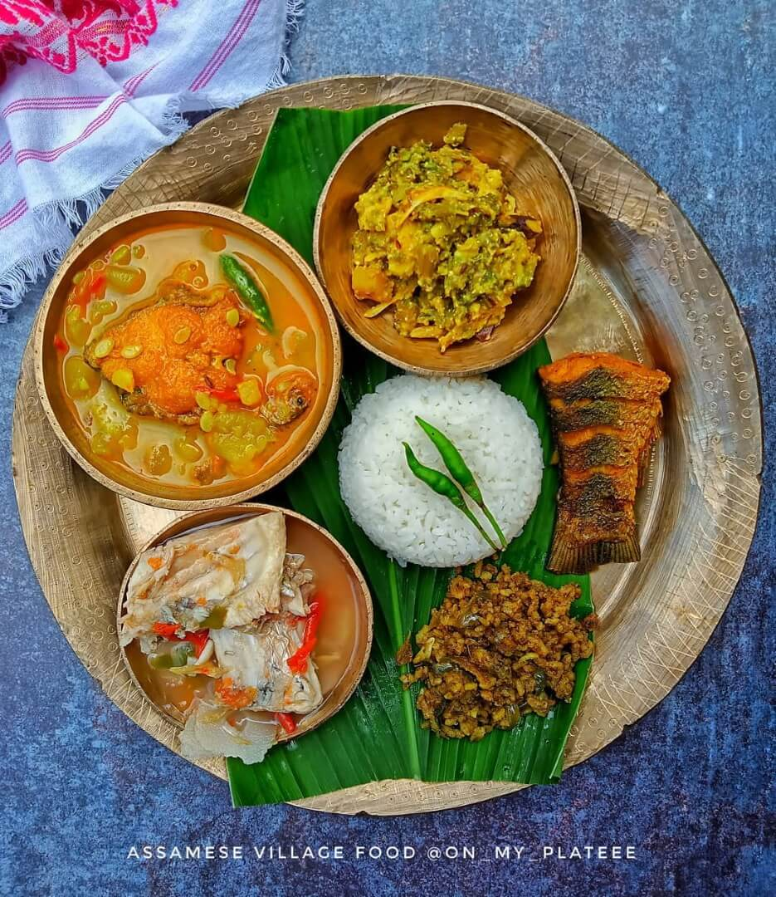
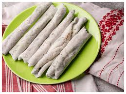
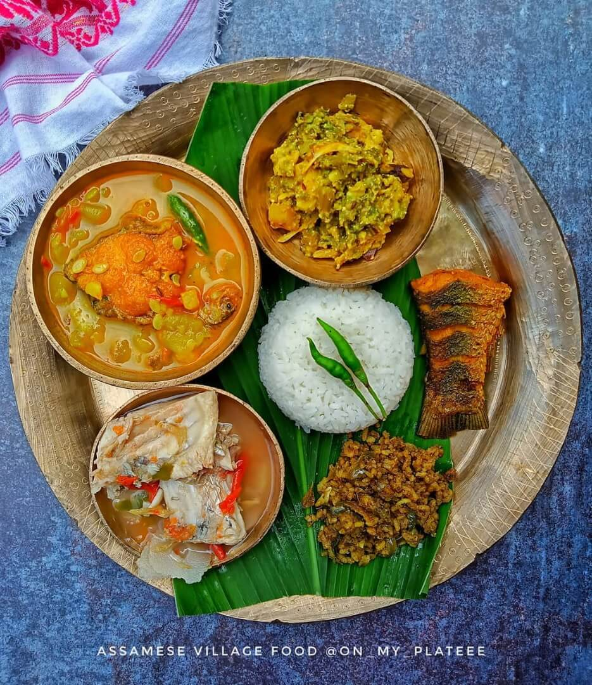

Delicious Assamese Cuisine
 



Assamese cuisine is known for its simplicity and unique flavors, with dishes like Assam Laksa and Pitha.


Assamese cuisine is known for its simplicity and unique flavors, with dishes like Assam Laksa and Pitha.